Helping Investors Bring Electricity to
the First Mile in Sub-Saharan Africa
the First Mile in Sub-Saharan Africa
Map
East Africa
Fortune 100 company
Global energy companies
Investors and development banks
PROBLEM:
For global energy investors and development banks looking to improve or monitor the impact of existing electrification, or bring electricity to the first mile, existing data is insufficient to inform their decisions.
SOLUTION:
To get a read on electrification, a Fortune 100 company turned to Premise to map which homes are on and off the grid, documenting the size and roof types of the unelectrified houses, the presence of generators, and other key variables to make smarter investment decisions.
Premise also mapped transformer locations and collected other critical qualitative data about their status, which development banks used to more efficiently allocate funds to neighborhoods in need.
Premise also mapped transformer locations and collected other critical qualitative data about their status, which development banks used to more efficiently allocate funds to neighborhoods in need.
Electrification.
Premise is mapping electrification infrastructure in a regional town in sub-Saharan East Africa, capturing which homes and businesses are electrified, and then layering contextualization and proprietary analytics for strategic investment targeting.
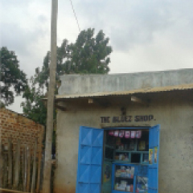
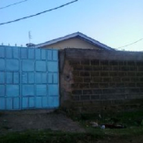
 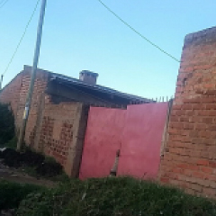
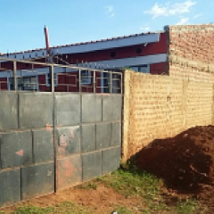
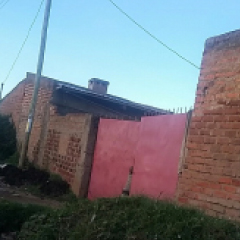
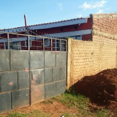
 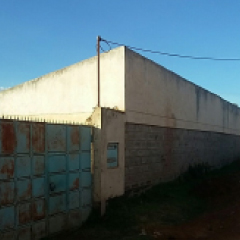
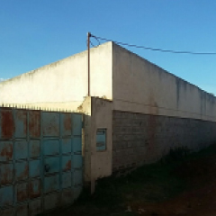
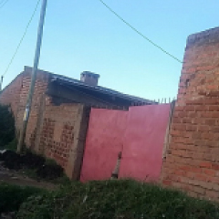
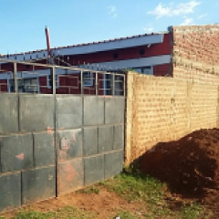
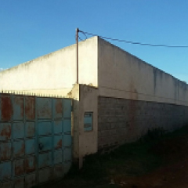
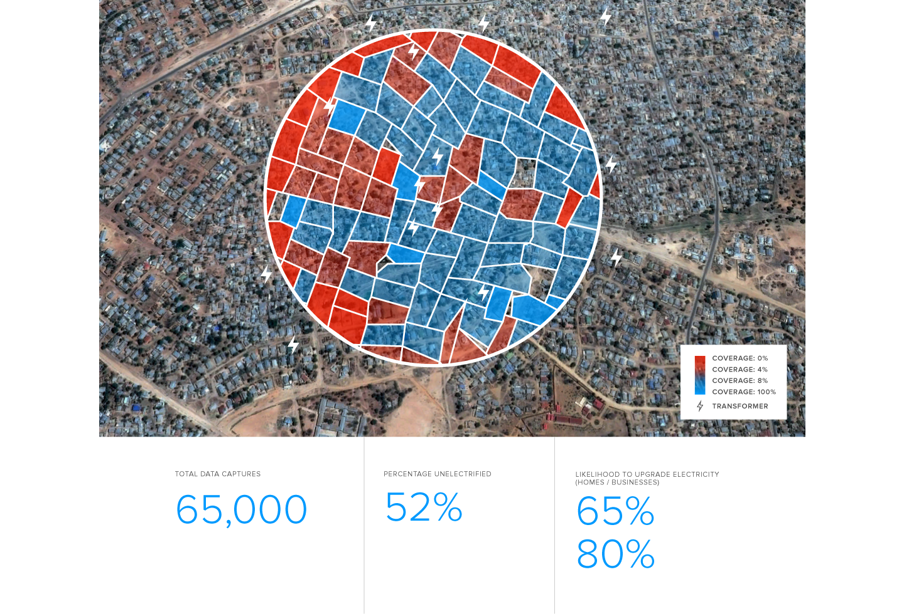
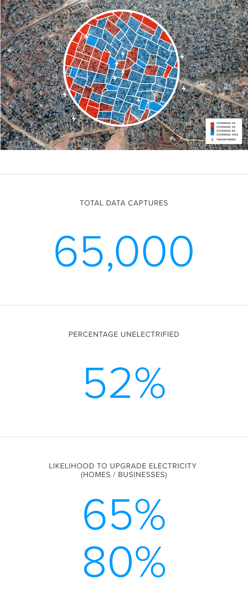
Pioneering a Set of Alternative Economic
Indicators in Global Markets
Indicators in Global Markets
Index
Brazil
Bloomberg, LLP.
Global banks
Hedge funds
Sovereign wealth and private equity funds
Monetary policy leaders
PROBLEM:
Getting an early, accurate read on inflation is really difficult given current data-gathering mechanisms, which are slow and laborious to report.
SOLUTION:
The U.N. Food and Agriculture Organization determined that Premise’s Food Staples Index in Brazil can predict food trends 25 days in advance of Brazil’s official monthly releases.
Premise publishes its Argentina, Brazil, China, India and U.S. food staples indexes via the Bloomberg terminal, giving traders, forecaster, analysts and government officials an unprecedented advantage to nowcast expected market behaviors up to several weeks early.
Premise publishes its Argentina, Brazil, China, India and U.S. food staples indexes via the Bloomberg terminal, giving traders, forecaster, analysts and government officials an unprecedented advantage to nowcast expected market behaviors up to several weeks early.
Consumer Staples Price Index.
Daily price change (%) since January 2014
Source: Premise Data / Bloomberg
Source: Premise Data / Bloomberg
 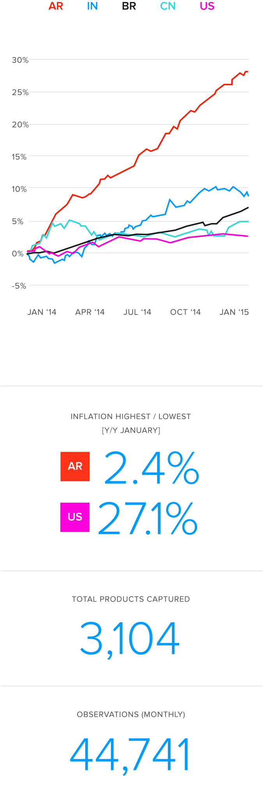
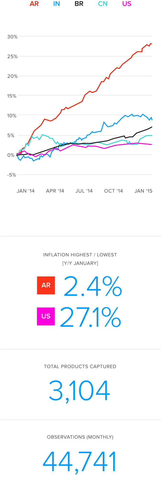
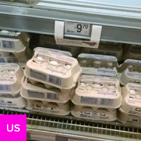
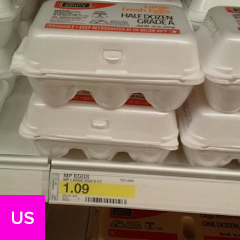
Piercing the Grey Market Veil:
Consumer Product Placement in Global Markets
Consumer Product Placement in Global Markets
Verify
Vietnam
Leading CPG/FMCG company
PROBLEM:
CPG companies operating in markets all over the world lack clear metrics and data into how and where their products are being distributed and traded in countries like Vietnam and Zimbabwe.
SOLUTION:
Premise verified product availability, SKU pricing and shelf volumes, enabling the company to navigate the market with unprecedented granularity and optimize their local brand strategies.
Product Placement Verification.
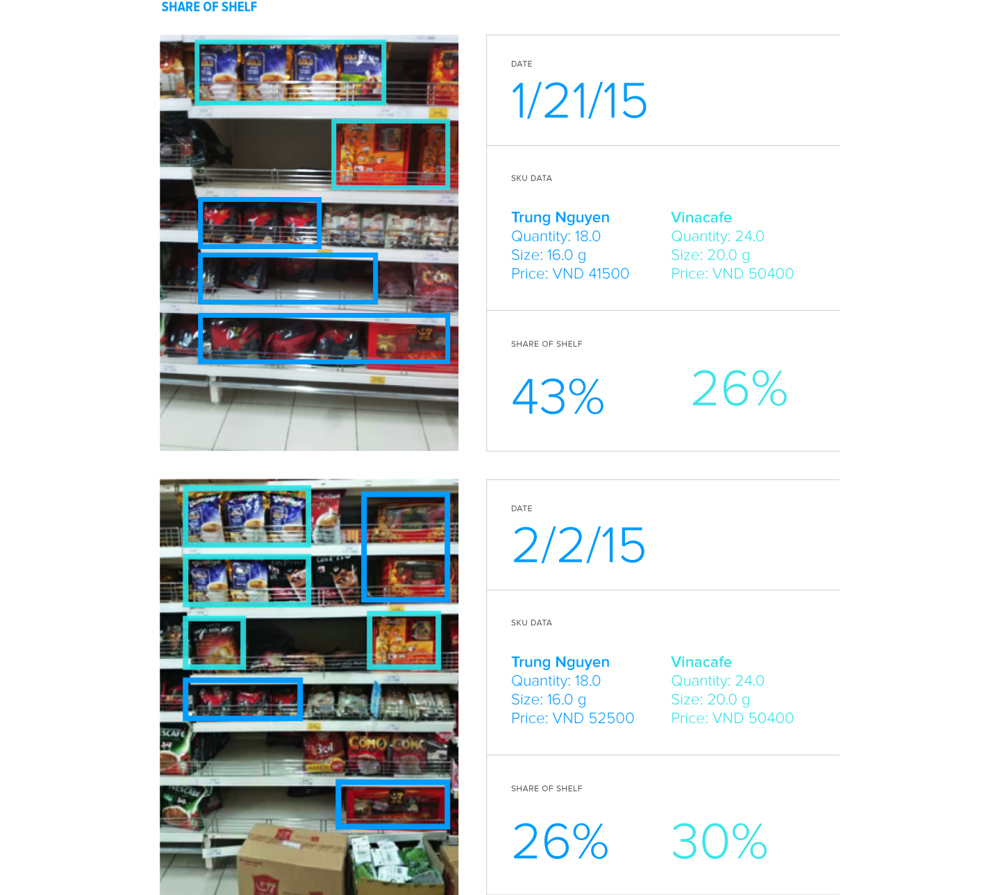
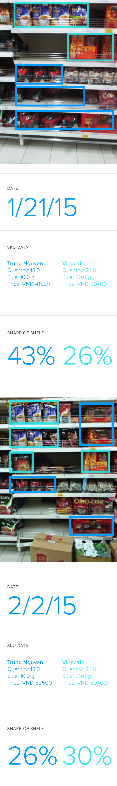
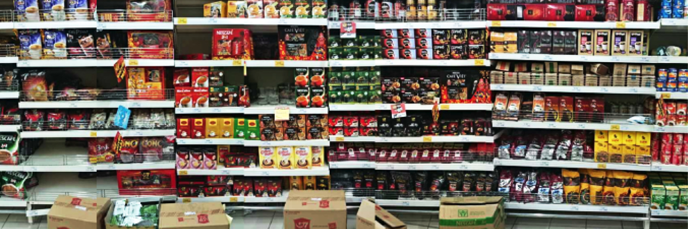
Tracking the cost of feeding 200 million people in Nigeria and Ghana
Index
Ghana, Nigeria
Standard Chartered (Nigeria, Ghana)
PROBLEM:
There’s been a paucity of independent gauges on growth or economic activity in top markets in sub-Saharan Africa, which limits foreign investment activity in these important global economies.
SOLUTION:
Standard Chartered partnered with Premise to create two food price indicators in Nigeria and Ghana. Powered by Premise data, these indicators give Standard Chartered and their customers a high resolution, real-time read on food prices at the shelf level, helping them better manage substantial risk, investment and trading opportunities.
Consumer Grain Prices.
Price level in major urban markets: Kano, Nigeria,
and Accra, Ghana (base = 100)
Source: Premise Data 2014-2015
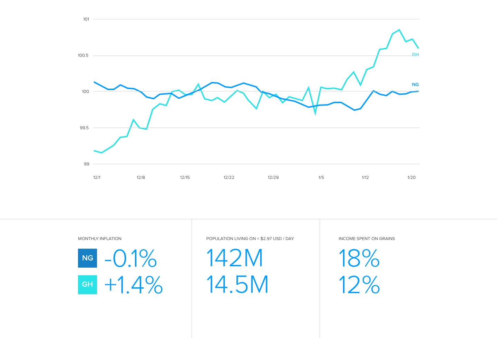
and Accra, Ghana (base = 100)
Source: Premise Data 2014-2015

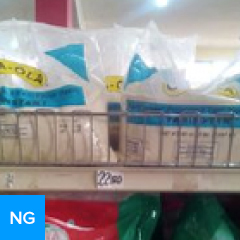

Map
WHO: Vulcan
PROBLEM:
Humanitarian agencies frequently lack real-time visibility into risk conditions in crisis zones, particularly when coordinating between multiple agencies.
SOLUTION:
Premise partnered with Vulcan, Paul Allen’s company, to deploy thousands of mobile phones pre-loaded with Premise software to aid workers on the Ebola frontlines in Liberia, Sierra Leone, Mali and Guinea.
Field workers capture observations about food and sterile supplies, quarantine status, sanitary conditions and crisis- related signage. Premise analyzes the data, sending it back in real-time to organizations including the U.N. Mission for Ebola Emergency Response and other global aid agencies so they can maximize their coordinated response efforts.
Field workers capture observations about food and sterile supplies, quarantine status, sanitary conditions and crisis- related signage. Premise analyzes the data, sending it back in real-time to organizations including the U.N. Mission for Ebola Emergency Response and other global aid agencies so they can maximize their coordinated response efforts.
ON THE GROUND OBSERVATIONS
TRACKING SANITATION INFRASTRUCTURE
Prealence of handwashing stations, hospitals and health signage across Monrovia, Liberia's capital
Explore More Stories.
Explore More
Tracking the price divergence for meats and sweets in Kano and Lagos during Ramadan
Nigeria
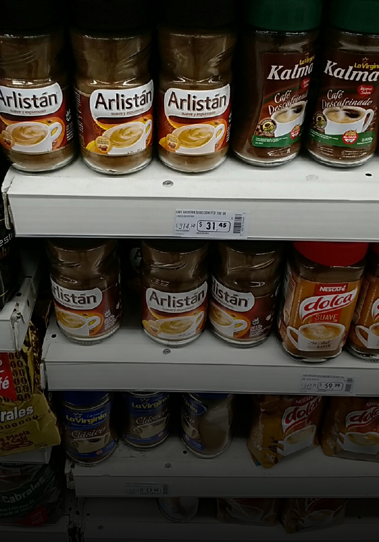
READ BLOG POST
Piercing the Grey Market Veil
Vietnam
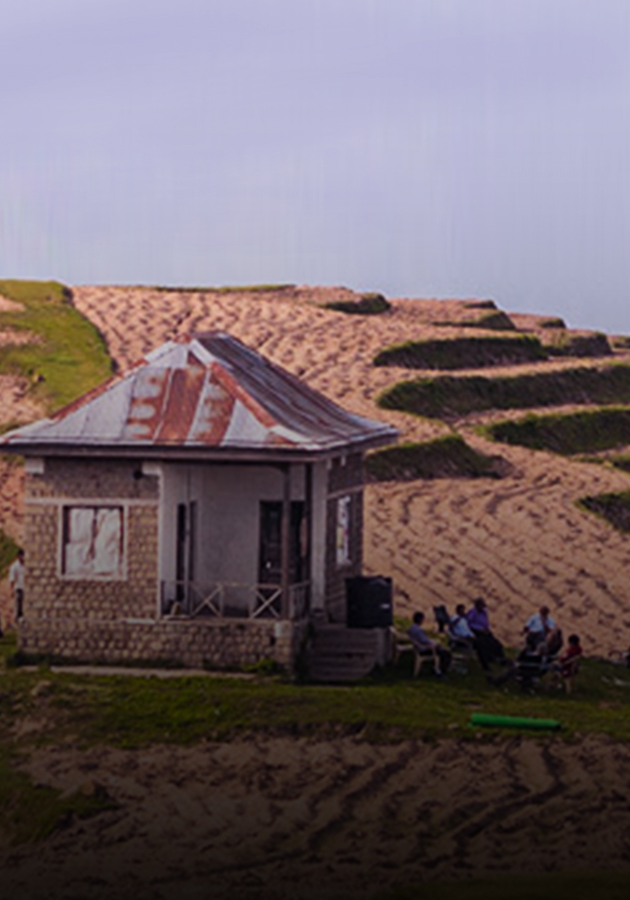
READ CASE STUDY
Discerning the economic effects of drought, new policies and poor cold storage infrastructure in India.
India
READ BLOG POST
Pioneering a set of alternative economic indicators in global markets
Brazil
READ CASE STUDY

Helping investors bring electricity to the first mile in Sub-Saharan Africa
East Africa
READ CASE STUDY
Found on nearly every every market shelf globally, Coca-Cola is bellwether for a country's economic health
China
READ BLOG POST
Tracking the cost of feeding 200 million people
Nigeria, Ghana
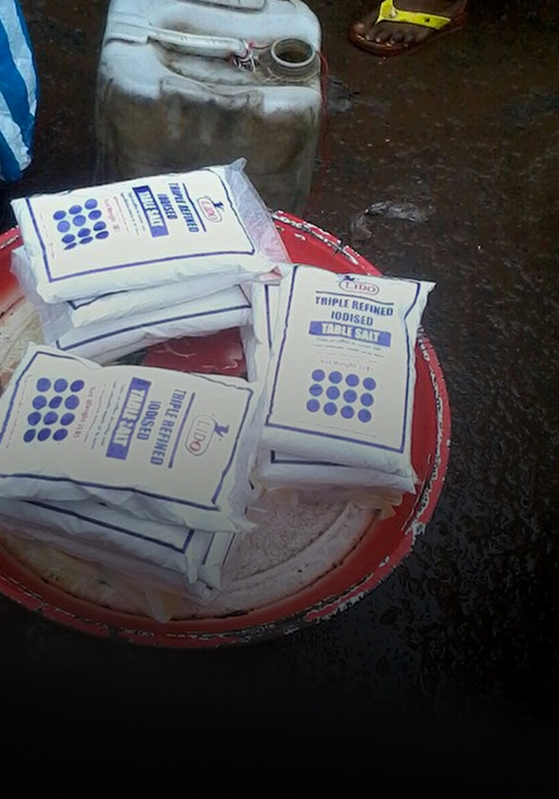
READ CASE STUDY
Determining Ebola’s impact on food prices in markets across Monrovia, Liberia
Liberia
READ BLOG POST
SHOW MORE STORIES
Map your world.
Get started with Premise.
Get started with Premise.
CONTACT US